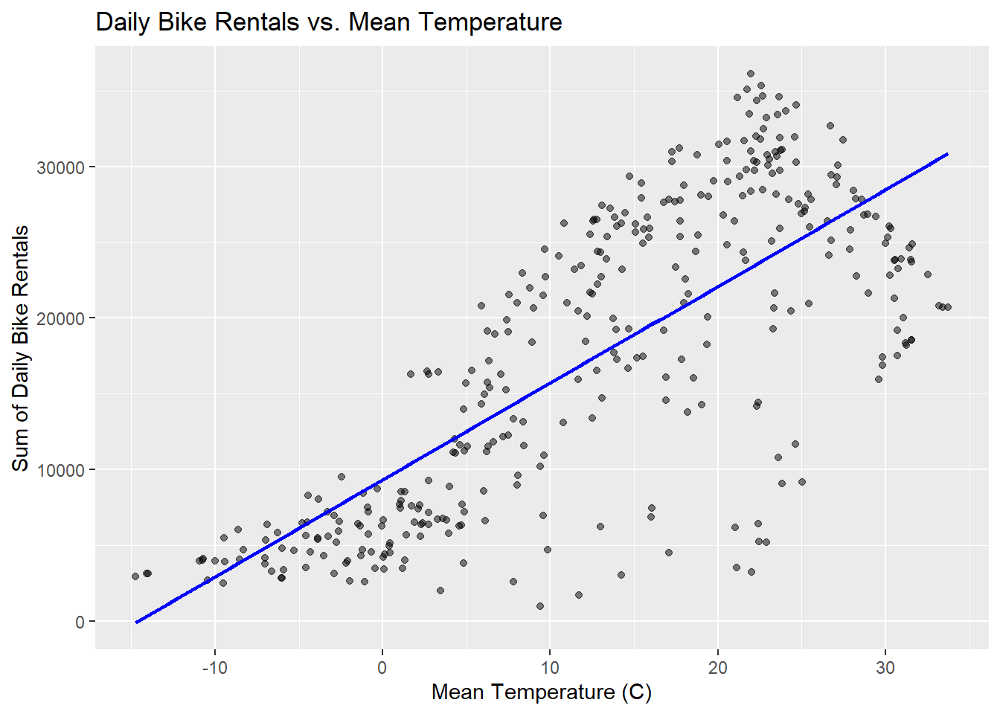
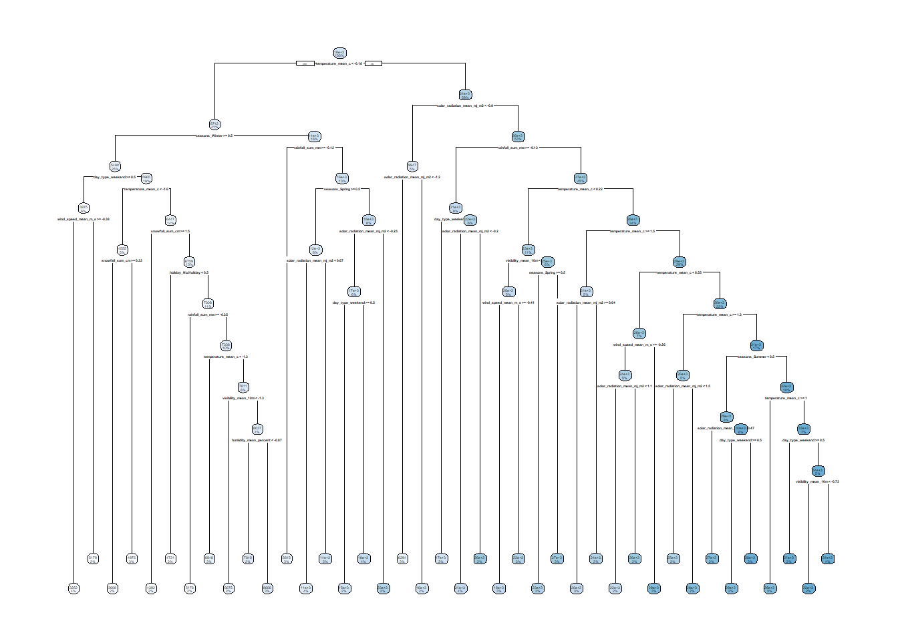
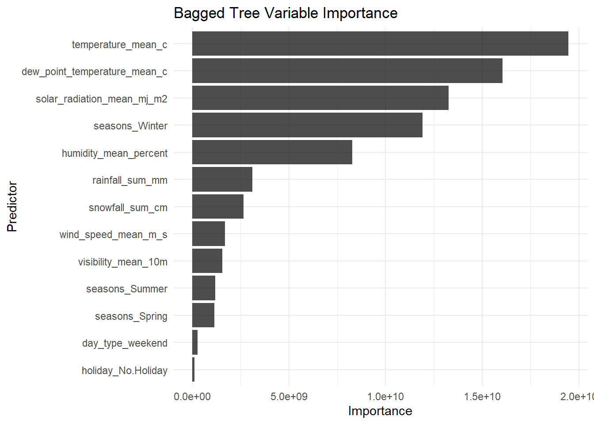
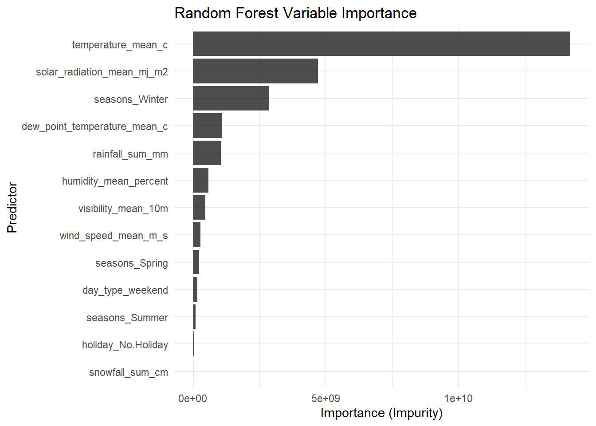

# Load necessary libraries
library(tidyverse)
library(tidymodels)
library(lubridate)
library(janitor)
library(baguette)
library(glmnet)
library(ranger)
library(rpart.plot)ST558 Homework9
Jamin Goo (NCSU id : jgoo)
1. Reading Data (Homework8)
bike_data_raw <- read_csv("SeoulBikeData.csv",
locale = locale(encoding = "latin1"))Rows: 8760 Columns: 14
── Column specification ────────────────────────────────────────────────────────
Delimiter: ","
chr (4): Date, Seasons, Holiday, Functioning Day
dbl (10): Rented Bike Count, Hour, Temperature(°C), Humidity(%), Wind speed ...
ℹ Use `spec()` to retrieve the full column specification for this data.
ℹ Specify the column types or set `show_col_types = FALSE` to quiet this message.2. EDA (Homework8)
Checking the Data
# 1. Check for missingness
print(colSums(is.na(bike_data_raw))) Date Rented Bike Count
0 0
Hour Temperature(°C)
0 0
Humidity(%) Wind speed (m/s)
0 0
Visibility (10m) Dew point temperature(°C)
0 0
Solar Radiation (MJ/m2) Rainfall(mm)
0 0
Snowfall (cm) Seasons
0 0
Holiday Functioning Day
0 0 All columns are 0 : There is no missing.
# 2. Check column types and values
glimpse(bike_data_raw)Rows: 8,760
Columns: 14
$ Date <chr> "01/12/2017", "01/12/2017", "01/12/2017", …
$ `Rented Bike Count` <dbl> 254, 204, 173, 107, 78, 100, 181, 460, 930…
$ Hour <dbl> 0, 1, 2, 3, 4, 5, 6, 7, 8, 9, 10, 11, 12, …
$ `Temperature(°C)` <dbl> -5.2, -5.5, -6.0, -6.2, -6.0, -6.4, -6.6, …
$ `Humidity(%)` <dbl> 37, 38, 39, 40, 36, 37, 35, 38, 37, 27, 24…
$ `Wind speed (m/s)` <dbl> 2.2, 0.8, 1.0, 0.9, 2.3, 1.5, 1.3, 0.9, 1.…
$ `Visibility (10m)` <dbl> 2000, 2000, 2000, 2000, 2000, 2000, 2000, …
$ `Dew point temperature(°C)` <dbl> -17.6, -17.6, -17.7, -17.6, -18.6, -18.7, …
$ `Solar Radiation (MJ/m2)` <dbl> 0.00, 0.00, 0.00, 0.00, 0.00, 0.00, 0.00, …
$ `Rainfall(mm)` <dbl> 0, 0, 0, 0, 0, 0, 0, 0, 0, 0, 0, 0, 0, 0, …
$ `Snowfall (cm)` <dbl> 0, 0, 0, 0, 0, 0, 0, 0, 0, 0, 0, 0, 0, 0, …
$ Seasons <chr> "Winter", "Winter", "Winter", "Winter", "W…
$ Holiday <chr> "No Holiday", "No Holiday", "No Holiday", …
$ `Functioning Day` <chr> "Yes", "Yes", "Yes", "Yes", "Yes", "Yes", …summary(bike_data_raw |> select(where(is.numeric))) Rented Bike Count Hour Temperature(°C) Humidity(%)
Min. : 0.0 Min. : 0.00 Min. :-17.80 Min. : 0.00
1st Qu.: 191.0 1st Qu.: 5.75 1st Qu.: 3.50 1st Qu.:42.00
Median : 504.5 Median :11.50 Median : 13.70 Median :57.00
Mean : 704.6 Mean :11.50 Mean : 12.88 Mean :58.23
3rd Qu.:1065.2 3rd Qu.:17.25 3rd Qu.: 22.50 3rd Qu.:74.00
Max. :3556.0 Max. :23.00 Max. : 39.40 Max. :98.00
Wind speed (m/s) Visibility (10m) Dew point temperature(°C)
Min. :0.000 Min. : 27 Min. :-30.600
1st Qu.:0.900 1st Qu.: 940 1st Qu.: -4.700
Median :1.500 Median :1698 Median : 5.100
Mean :1.725 Mean :1437 Mean : 4.074
3rd Qu.:2.300 3rd Qu.:2000 3rd Qu.: 14.800
Max. :7.400 Max. :2000 Max. : 27.200
Solar Radiation (MJ/m2) Rainfall(mm) Snowfall (cm)
Min. :0.0000 Min. : 0.0000 Min. :0.00000
1st Qu.:0.0000 1st Qu.: 0.0000 1st Qu.:0.00000
Median :0.0100 Median : 0.0000 Median :0.00000
Mean :0.5691 Mean : 0.1487 Mean :0.07507
3rd Qu.:0.9300 3rd Qu.: 0.0000 3rd Qu.:0.00000
Max. :3.5200 Max. :35.0000 Max. :8.80000 print(map(bike_data_raw |> select(where(is.character), -Date), unique))$Seasons
[1] "Winter" "Spring" "Summer" "Autumn"
$Holiday
[1] "No Holiday" "Holiday"
$`Functioning Day`
[1] "Yes" "No" # 3, 4, 5. Convert Date, Convert to Factors, Rename
bike_data_cleaned <- bike_data_raw |>
mutate(
Date = dmy(Date), # 3. Convert the Date column into an actual date
Seasons = factor(Seasons), # 4: Turn the character variables
Holiday = factor(Holiday), # 4: Turn the character variables
) |>
clean_names() |> # 5: Rename all the variables to have easy to use names
mutate(
functioning_day = factor(functioning_day) # 4: Turn the character variables
)
glimpse(bike_data_cleaned)Rows: 8,760
Columns: 14
$ date <date> 2017-12-01, 2017-12-01, 2017-12-01, 2017-12-0…
$ rented_bike_count <dbl> 254, 204, 173, 107, 78, 100, 181, 460, 930, 49…
$ hour <dbl> 0, 1, 2, 3, 4, 5, 6, 7, 8, 9, 10, 11, 12, 13, …
$ temperature_c <dbl> -5.2, -5.5, -6.0, -6.2, -6.0, -6.4, -6.6, -7.4…
$ humidity_percent <dbl> 37, 38, 39, 40, 36, 37, 35, 38, 37, 27, 24, 21…
$ wind_speed_m_s <dbl> 2.2, 0.8, 1.0, 0.9, 2.3, 1.5, 1.3, 0.9, 1.1, 0…
$ visibility_10m <dbl> 2000, 2000, 2000, 2000, 2000, 2000, 2000, 2000…
$ dew_point_temperature_c <dbl> -17.6, -17.6, -17.7, -17.6, -18.6, -18.7, -19.…
$ solar_radiation_mj_m2 <dbl> 0.00, 0.00, 0.00, 0.00, 0.00, 0.00, 0.00, 0.00…
$ rainfall_mm <dbl> 0, 0, 0, 0, 0, 0, 0, 0, 0, 0, 0, 0, 0, 0, 0, 0…
$ snowfall_cm <dbl> 0, 0, 0, 0, 0, 0, 0, 0, 0, 0, 0, 0, 0, 0, 0, 0…
$ seasons <fct> Winter, Winter, Winter, Winter, Winter, Winter…
$ holiday <fct> No Holiday, No Holiday, No Holiday, No Holiday…
$ functioning_day <fct> Yes, Yes, Yes, Yes, Yes, Yes, Yes, Yes, Yes, Y…# 6: Create summary statistics (especially related to the bike rental count)
print(
bike_data_cleaned |>
group_by(functioning_day) |>
summarize(
count = n(),
min_bikes = min(rented_bike_count),
mean_bikes = mean(rented_bike_count),
max_bikes = max(rented_bike_count)
)
)# A tibble: 2 × 5
functioning_day count min_bikes mean_bikes max_bikes
<fct> <int> <dbl> <dbl> <dbl>
1 No 295 0 0 0
2 Yes 8465 2 729. 3556# 6: Subset the data appropriately
bike_data_functional <- bike_data_cleaned |>
filter(functioning_day == "Yes")
summary(bike_data_functional) date rented_bike_count hour temperature_c
Min. :2017-12-01 Min. : 2.0 Min. : 0.00 Min. :-17.80
1st Qu.:2018-02-27 1st Qu.: 214.0 1st Qu.: 6.00 1st Qu.: 3.00
Median :2018-05-28 Median : 542.0 Median :12.00 Median : 13.50
Mean :2018-05-28 Mean : 729.2 Mean :11.51 Mean : 12.77
3rd Qu.:2018-08-24 3rd Qu.:1084.0 3rd Qu.:18.00 3rd Qu.: 22.70
Max. :2018-11-30 Max. :3556.0 Max. :23.00 Max. : 39.40
humidity_percent wind_speed_m_s visibility_10m dew_point_temperature_c
Min. : 0.00 Min. :0.000 Min. : 27 Min. :-30.600
1st Qu.:42.00 1st Qu.:0.900 1st Qu.: 935 1st Qu.: -5.100
Median :57.00 Median :1.500 Median :1690 Median : 4.700
Mean :58.15 Mean :1.726 Mean :1434 Mean : 3.945
3rd Qu.:74.00 3rd Qu.:2.300 3rd Qu.:2000 3rd Qu.: 15.200
Max. :98.00 Max. :7.400 Max. :2000 Max. : 27.200
solar_radiation_mj_m2 rainfall_mm snowfall_cm seasons
Min. :0.0000 Min. : 0.0000 Min. :0.00000 Autumn:1937
1st Qu.:0.0000 1st Qu.: 0.0000 1st Qu.:0.00000 Spring:2160
Median :0.0100 Median : 0.0000 Median :0.00000 Summer:2208
Mean :0.5679 Mean : 0.1491 Mean :0.07768 Winter:2160
3rd Qu.:0.9300 3rd Qu.: 0.0000 3rd Qu.:0.00000
Max. :3.5200 Max. :35.0000 Max. :8.80000
holiday functioning_day
Holiday : 408 No : 0
No Holiday:8057 Yes:8465
bike_data_functional_no <- bike_data_cleaned |>
filter(functioning_day == "No")
summary(bike_data_functional_no) date rented_bike_count hour temperature_c
Min. :2018-04-11 Min. :0 Min. : 0.0 Min. : 5.20
1st Qu.:2018-09-19 1st Qu.:0 1st Qu.: 5.0 1st Qu.:12.30
Median :2018-10-02 Median :0 Median :11.0 Median :16.30
Mean :2018-09-12 Mean :0 Mean :11.3 Mean :16.09
3rd Qu.:2018-10-09 3rd Qu.:0 3rd Qu.:17.0 3rd Qu.:19.35
Max. :2018-11-09 Max. :0 Max. :23.0 Max. :26.50
humidity_percent wind_speed_m_s visibility_10m dew_point_temperature_c
Min. :21.00 Min. :0.000 Min. : 201 Min. :-7.00
1st Qu.:49.00 1st Qu.:0.900 1st Qu.:1055 1st Qu.: 5.30
Median :62.00 Median :1.500 Median :1814 Median : 7.80
Mean :60.49 Mean :1.697 Mean :1522 Mean : 7.77
3rd Qu.:73.00 3rd Qu.:2.350 3rd Qu.:2000 3rd Qu.:11.00
Max. :96.00 Max. :5.300 Max. :2000 Max. :16.10
solar_radiation_mj_m2 rainfall_mm snowfall_cm seasons
Min. :0.0000 Min. : 0.0000 Min. :0 Autumn:247
1st Qu.:0.0000 1st Qu.: 0.0000 1st Qu.:0 Spring: 48
Median :0.0000 Median : 0.0000 Median :0 Summer: 0
Mean :0.6048 Mean : 0.1363 Mean :0 Winter: 0
3rd Qu.:1.0650 3rd Qu.: 0.0000 3rd Qu.:0
Max. :3.3200 Max. :18.0000 Max. :0
holiday functioning_day
Holiday : 24 No :295
No Holiday:271 Yes: 0
If the bike is not functioning, the rented bike count is always 0.
So we will focus on the data where the bike is functioning for further analysis.
# 7: To simplify our analysis, we’ll summarize across the hours
bike_data_daily <- bike_data_functional |>
group_by(date, seasons, holiday) |>
summarize(
# Find the sum of rented_bike_count, rainfall, and snowfall
rented_bike_count_sum = sum(rented_bike_count),
rainfall_sum_mm = sum(rainfall_mm),
snowfall_sum_cm = sum(snowfall_cm),
# Find the mean of all the weather related variables
temperature_mean_c = mean(temperature_c),
humidity_mean_percent = mean(humidity_percent),
wind_speed_mean_m_s = mean(wind_speed_m_s),
visibility_mean_10m = mean(visibility_10m),
dew_point_temperature_mean_c = mean(dew_point_temperature_c),
solar_radiation_mean_mj_m2 = mean(solar_radiation_mj_m2),
.groups = 'drop'
)
glimpse(bike_data_daily)Rows: 353
Columns: 12
$ date <date> 2017-12-01, 2017-12-02, 2017-12-03, 2017…
$ seasons <fct> Winter, Winter, Winter, Winter, Winter, W…
$ holiday <fct> No Holiday, No Holiday, No Holiday, No Ho…
$ rented_bike_count_sum <dbl> 9539, 8523, 7222, 8729, 8307, 6669, 8549,…
$ rainfall_sum_mm <dbl> 0.0, 0.0, 4.0, 0.1, 0.0, 1.3, 0.0, 0.0, 0…
$ snowfall_sum_cm <dbl> 0.0, 0.0, 0.0, 0.0, 0.0, 8.6, 10.4, 0.0, …
$ temperature_mean_c <dbl> -2.45416667, 1.32500000, 4.87500000, -0.3…
$ humidity_mean_percent <dbl> 45.87500, 61.95833, 81.54167, 52.50000, 3…
$ wind_speed_mean_m_s <dbl> 1.5375000, 1.7125000, 1.6125000, 3.450000…
$ visibility_mean_10m <dbl> 1870.7500, 1471.0833, 455.7500, 1362.8333…
$ dew_point_temperature_mean_c <dbl> -13.5458333, -5.7166667, 1.8833333, -9.92…
$ solar_radiation_mean_mj_m2 <dbl> 0.24875000, 0.26375000, 0.12541667, 0.282…# 8: Recreate my basic summary stats
summary(bike_data_daily) date seasons holiday rented_bike_count_sum
Min. :2017-12-01 Autumn:81 Holiday : 17 Min. : 977
1st Qu.:2018-02-27 Spring:90 No Holiday:336 1st Qu.: 6967
Median :2018-05-28 Summer:92 Median :18563
Mean :2018-05-28 Winter:90 Mean :17485
3rd Qu.:2018-08-24 3rd Qu.:26285
Max. :2018-11-30 Max. :36149
rainfall_sum_mm snowfall_sum_cm temperature_mean_c humidity_mean_percent
Min. : 0.000 Min. : 0.000 Min. :-14.738 Min. :22.25
1st Qu.: 0.000 1st Qu.: 0.000 1st Qu.: 3.304 1st Qu.:47.58
Median : 0.000 Median : 0.000 Median : 13.738 Median :57.17
Mean : 3.576 Mean : 1.863 Mean : 12.776 Mean :58.17
3rd Qu.: 0.500 3rd Qu.: 0.000 3rd Qu.: 22.592 3rd Qu.:67.71
Max. :95.500 Max. :78.700 Max. : 33.742 Max. :95.88
wind_speed_mean_m_s visibility_mean_10m dew_point_temperature_mean_c
Min. :0.6625 Min. : 214.3 Min. :-27.750
1st Qu.:1.3042 1st Qu.:1087.0 1st Qu.: -5.188
Median :1.6583 Median :1557.8 Median : 4.612
Mean :1.7261 Mean :1434.0 Mean : 3.954
3rd Qu.:1.9542 3rd Qu.:1874.3 3rd Qu.: 14.921
Max. :4.0000 Max. :2000.0 Max. : 25.038
solar_radiation_mean_mj_m2
Min. :0.02917
1st Qu.:0.28333
Median :0.56500
Mean :0.56773
3rd Qu.:0.82000
Max. :1.21667 # Plot: Rented Bike Count vs. Mean Temperature
plot_temp <- bike_data_daily |>
ggplot(aes(x = temperature_mean_c , y = rented_bike_count_sum)) +
geom_point(alpha = 0.5) +
geom_smooth(method = "lm", se = FALSE, color = "blue") +
labs(
title = "Daily Bike Rentals vs. Mean Temperature",
x = "Mean Temperature (C)",
y = "Sum of Daily Bike Rentals"
)
print(plot_temp)`geom_smooth()` using formula = 'y ~ x'
# correlation between my numeric variables
cor_matrix <- bike_data_daily |>
select(where(is.numeric)) |>
cor()
print(round(cor_matrix, 2)) rented_bike_count_sum rainfall_sum_mm
rented_bike_count_sum 1.00 -0.24
rainfall_sum_mm -0.24 1.00
snowfall_sum_cm -0.27 -0.02
temperature_mean_c 0.75 0.14
humidity_mean_percent 0.04 0.53
wind_speed_mean_m_s -0.19 -0.10
visibility_mean_10m 0.17 -0.22
dew_point_temperature_mean_c 0.65 0.26
solar_radiation_mean_mj_m2 0.74 -0.32
snowfall_sum_cm temperature_mean_c
rented_bike_count_sum -0.27 0.75
rainfall_sum_mm -0.02 0.14
snowfall_sum_cm 1.00 -0.27
temperature_mean_c -0.27 1.00
humidity_mean_percent 0.07 0.40
wind_speed_mean_m_s 0.02 -0.26
visibility_mean_10m -0.10 0.00
dew_point_temperature_mean_c -0.21 0.96
solar_radiation_mean_mj_m2 -0.23 0.55
humidity_mean_percent wind_speed_mean_m_s
rented_bike_count_sum 0.04 -0.19
rainfall_sum_mm 0.53 -0.10
snowfall_sum_cm 0.07 0.02
temperature_mean_c 0.40 -0.26
humidity_mean_percent 1.00 -0.23
wind_speed_mean_m_s -0.23 1.00
visibility_mean_10m -0.56 0.21
dew_point_temperature_mean_c 0.63 -0.29
solar_radiation_mean_mj_m2 -0.27 0.10
visibility_mean_10m dew_point_temperature_mean_c
rented_bike_count_sum 0.17 0.65
rainfall_sum_mm -0.22 0.26
snowfall_sum_cm -0.10 -0.21
temperature_mean_c 0.00 0.96
humidity_mean_percent -0.56 0.63
wind_speed_mean_m_s 0.21 -0.29
visibility_mean_10m 1.00 -0.15
dew_point_temperature_mean_c -0.15 1.00
solar_radiation_mean_mj_m2 0.27 0.38
solar_radiation_mean_mj_m2
rented_bike_count_sum 0.74
rainfall_sum_mm -0.32
snowfall_sum_cm -0.23
temperature_mean_c 0.55
humidity_mean_percent -0.27
wind_speed_mean_m_s 0.10
visibility_mean_10m 0.27
dew_point_temperature_mean_c 0.38
solar_radiation_mean_mj_m2 1.003. Split the Data (Homework8)
set.seed(10)
bike_split <- initial_split(bike_data_daily, prop = 0.75, strata = seasons)
bike_train <- training(bike_split)
bike_test <- testing(bike_split)
bike_CV_folds <- vfold_cv(bike_train, v = 10, strata = seasons)4. MLR recipe (Homework8)
MLR_recipe1 <- recipe(rented_bike_count_sum ~ ., data = bike_train) |>
# Ignore the date variable for modeling
step_date(date, features = c("dow")) |>
step_mutate(day_type = factor(if_else(date_dow %in% c("Sat", "Sun"),
"weekend", "weekday"))) |>
step_rm(date, date_dow) |>
# Standardize the numeric variables since their scales are pretty different.
step_normalize(all_numeric_predictors()) |>
# Create dummy variables for the seasons, holiday, and our new day type variable
step_dummy(all_nominal_predictors())5. Model Specifications
# A. LASSO Model
lasso_spec <- linear_reg(penalty = tune(), mixture = 1) |>
set_engine("glmnet")
# B. Regression Tree Model
tree_spec <- decision_tree(cost_complexity = tune(), tree_depth = tune(), min_n = tune()) |>
set_engine("rpart") |>
set_mode("regression")
# C. Bagged Tree Model
bag_spec <- bag_tree(cost_complexity = tune(), tree_depth = tune(), min_n = tune()) |>
set_engine("rpart", times = 50) |>
set_mode("regression")
# D. Random Forest Model
rf_spec <- rand_forest(mtry = tune(), min_n = tune(), trees = 1000) |>
set_engine("ranger", importance = "impurity") |>
set_mode("regression")6. Workflows
lasso_wkf <- workflow() |> add_recipe(MLR_recipe1) |> add_model(lasso_spec)
tree_wkf <- workflow() |> add_recipe(MLR_recipe1) |> add_model(tree_spec)
bag_wkf <- workflow() |> add_recipe(MLR_recipe1) |> add_model(bag_spec)
rf_wkf <- workflow() |> add_recipe(MLR_recipe1) |> add_model(rf_spec)7. Tuning
# Setting up grids
lasso_grid <- grid_regular(penalty(), levels = 50)
tree_grid <- grid_regular(cost_complexity(), tree_depth(), min_n(), levels = 5)
bag_grid <- grid_regular(cost_complexity(), tree_depth(), min_n(), levels = 5)
rf_grid <- grid_regular(mtry(range = c(1, 10)), min_n(), levels = 5)
# Tune Models
lasso_res <- tune_grid(lasso_wkf, resamples = bike_CV_folds, grid = lasso_grid)
tree_res <- tune_grid(tree_wkf, resamples = bike_CV_folds, grid = tree_grid)
bag_res <- tune_grid(bag_wkf, resamples = bike_CV_folds, grid = bag_grid)Registered S3 method overwritten by 'butcher':
method from
as.character.dev_topic generics→ A | warning: There was 1 warning in `dplyr::mutate()`.
ℹ In argument: `model = iter(...)`.
Caused by warning:
! package 'future' was built under R version 4.5.2There were issues with some computations A: x1
There were issues with some computations A: x1rf_res <- tune_grid(rf_wkf, resamples = bike_CV_folds, grid = rf_grid)8. Workflows
# Select best parameters for each model
best_lasso <- select_best(lasso_res, metric = "rmse")
final_lasso_wkf <- finalize_workflow(lasso_wkf, best_lasso)
final_lasso_fit <- last_fit(final_lasso_wkf, bike_split)
best_tree <- select_best(tree_res, metric = "rmse")
final_tree_wkf <- finalize_workflow(tree_wkf, best_tree)
final_tree_fit <- last_fit(final_tree_wkf, bike_split)
best_bag <- select_best(bag_res, metric = "rmse")
final_bag_wkf <- finalize_workflow(bag_wkf, best_bag)
final_bag_fit <- last_fit(final_bag_wkf, bike_split)
best_rf <- select_best(rf_res, metric = "rmse")
final_rf_wkf <- finalize_workflow(rf_wkf, best_rf)
final_rf_fit <- last_fit(final_rf_wkf, bike_split)9. Best MLR model (Homework8)
MLR_recipe3 <- MLR_recipe1 |>
step_interact(~ starts_with("seasons_"):starts_with("holiday_")) |>
step_interact(~ starts_with("seasons_"):temperature_mean_c) |>
step_interact(~ temperature_mean_c:rainfall_sum_mm) |>
step_poly(rainfall_sum_mm, snowfall_sum_cm, temperature_mean_c, humidity_mean_percent,
wind_speed_mean_m_s, visibility_mean_10m, dew_point_temperature_mean_c,
solar_radiation_mean_mj_m2, degree = 2)
MLR_wkf3 <- workflow() |> add_recipe(MLR_recipe3) |> add_model(linear_reg() |> set_engine("lm"))
final_mlr_fit <- last_fit(MLR_wkf3, bike_split)10. Comparison
# Collect metrics (RMSE and R squared)
compare_models <- bind_rows(
collect_metrics(final_lasso_fit) |> mutate(model = "LASSO"),
collect_metrics(final_tree_fit) |> mutate(model = "Regression Tree"),
collect_metrics(final_bag_fit) |> mutate(model = "Bagged Tree"),
collect_metrics(final_rf_fit) |> mutate(model = "Random Forest"),
collect_metrics(final_mlr_fit) |> mutate(model = "MLR (HW8 Best)")
) |>
select(model, .metric, .estimate) |>
pivot_wider(names_from = .metric, values_from = .estimate)
print(compare_models)# A tibble: 5 × 3
model rmse rsq
<chr> <dbl> <dbl>
1 LASSO 3551. 0.879
2 Regression Tree 3629. 0.867
3 Bagged Tree 2800. 0.921
4 Random Forest 2760. 0.925
5 MLR (HW8 Best) 11843. 0.464Random Forest is the best model based on RMSE(lowest) and R Squared(highest).
11. Report
# A. LASSO Coefficient Table
lasso_coefs <- extract_fit_parsnip(final_lasso_fit) |>
tidy() |>
filter(estimate != 0)
print(lasso_coefs)# A tibble: 14 × 3
term estimate penalty
<chr> <dbl> <dbl>
1 (Intercept) 20276. 0.0000000001
2 rainfall_sum_mm -1691. 0.0000000001
3 snowfall_sum_cm -367. 0.0000000001
4 temperature_mean_c 62.9 0.0000000001
5 humidity_mean_percent -1171. 0.0000000001
6 wind_speed_mean_m_s -606. 0.0000000001
7 visibility_mean_10m -124. 0.0000000001
8 dew_point_temperature_mean_c 4128. 0.0000000001
9 solar_radiation_mean_mj_m2 4055. 0.0000000001
10 seasons_Spring -4827. 0.0000000001
11 seasons_Summer -3511. 0.0000000001
12 seasons_Winter -8306. 0.0000000001
13 holiday_No.Holiday 2702. 0.0000000001
14 day_type_weekend -2639. 0.0000000001# B. Regression Tree Plot
tree_engine <- extract_fit_engine(final_tree_fit)
rpart.plot(tree_engine, roundint = FALSE)Warning: labs do not fit even at cex 0.15, there may be some overplotting
# C. Bagged Tree
bag_engine <- extract_fit_engine(final_bag_fit)
bag_importance <- bag_engine$imp |>
select(term, value) |>
rename(Variable = term, Importance = value) |>
arrange(desc(Importance))
# Plot using ggplot
bag_plot <- bag_importance |>
ggplot(aes(x = reorder(Variable, Importance), y = Importance)) +
geom_col(fill = "black", alpha = 0.7) +
coord_flip() +
labs(
title = "Bagged Tree Variable Importance",
x = "Predictor",
y = "Importance"
) +
theme_minimal()
print(bag_plot)
# D. Random Forest
rf_engine <- extract_fit_engine(final_rf_fit)
rf_importance <- tibble(
Variable = names(rf_engine$variable.importance),
Importance = rf_engine$variable.importance
) |>
arrange(desc(Importance))
rf_plot <- rf_importance |>
ggplot(aes(x = reorder(Variable, Importance), y = Importance)) +
geom_col(fill = "black", alpha = 0.7) +
coord_flip() +
labs(
title = "Random Forest Variable Importance",
x = "Predictor",
y = "Importance (Impurity)"
) +
theme_minimal()
print(rf_plot)
12. Fit the best model(Random Forest) on the full dataset
final_model_full <- fit(final_rf_wkf, data = bike_data_daily)
print(final_model_full)══ Workflow [trained] ══════════════════════════════════════════════════════════
Preprocessor: Recipe
Model: rand_forest()
── Preprocessor ────────────────────────────────────────────────────────────────
5 Recipe Steps
• step_date()
• step_mutate()
• step_rm()
• step_normalize()
• step_dummy()
── Model ───────────────────────────────────────────────────────────────────────
Ranger result
Call:
ranger::ranger(x = maybe_data_frame(x), y = y, mtry = min_cols(~10L, x), num.trees = ~1000, min.node.size = min_rows(~2L, x), importance = ~"impurity", num.threads = 1, verbose = FALSE, seed = sample.int(10^5, 1))
Type: Regression
Number of trees: 1000
Sample size: 353
Number of independent variables: 13
Mtry: 10
Target node size: 2
Variable importance mode: impurity
Splitrule: variance
OOB prediction error (MSE): 7381252
R squared (OOB): 0.9252511